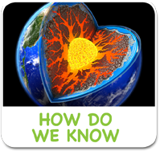

<!-- i-C-a -->
<div data-role="page" id="wonderscience">
  <div data-role="content" style="overflow:hidden !important;">
    
    <div id="titleb-holder"><h1 style="margin-top:184px;">The Wonders of Science</h1></div>
    
    <div style="width:90%;margin:auto;">
      <div class="aclink"><a href="#" data-transition="slide"></a></div>
      <div class="aclink"><a href="#" data-transition="slide"></a></div>
      <div class="aclink"><a href="#" data-transition="slide" id="invisibleworldlink"></a></div>
      <div class="aclink"><a href="#" data-transition="slide"></a></div><br>
      <div class="aclink"><a href="#" data-transition="slide"></a></div>
      <div class="aclink"><a href="#" data-transition="slide"></a></div>
      <div class="aclink"><a href="#" data-transition="slide"></a></div>
      <div class="aclink"><a href="#" data-transition="slide"></a></div>
    </div>
    <div class="botlogoholder"><a href="home.html" class="homelinkbh"></a></div>
    
    <div id="pre-iw" style="width:1024px;height:748px;position:absolute;left:0px;top:0px;visibility:hidden;background:#000000;">
      <div class="previdcontainer">
        <video id="iwvideo" width="1024" height="722" preload onpause="proceedToIw()">
          <source src="https://dmkessiapqw4p.cloudfront.net/video/blackhole_3-SD_for_Apple_Devices.m4v" type="video/mp4">
        </video>
      </div>
    </div>
  
  </div> <!-- end content -->  
    <script>
        var iwVideoStatus, iwVideoEvent;
				$(function() {
          mworldPageVisit(app.kidid, 'The-Wonders-of-Science');
          iwvideo.addEventListener('playing', function() {
            videoStatus = true;
          });
          iwvideo.addEventListener('event', function() {
            invisibleworldbg.play();
            $.mobile.changePage('sub-wonderscience-invisibleworld.html');
          });
					$("#wonderscience").swipe( { swipeRight:goBack, allowPageScroll:"auto"} );
				});
        
    function goBack() {
      if(iwVideoStatus != undefined) {
        iwVideoEvent = true;
        iwvideo.pause();
        iwvideo.currentTime = 0;
        sciencesoundbg.play();
        $('#pre-iw').css({"visibility":"hidden", "z-index":0});
      } else {
        $.mobile.changePage("home.html", {transition: "flip", reverse: true });
        sciencesoundbg.pause(); sciencesoundbg.currentTime = 0; 
        mainaudiobg.play();
      }
    }
    
    $('#iwvideo').on('tap', function() {
      if(iwVideoEvent != undefined) { iwVideoEvent = undefined; return; }
      if(iwVideoStatus == undefined) { return; }
      iwVideoStatus = undefined;
      invisibleworldbg.play();
      $.mobile.changePage('sub-wonderscience-invisibleworld.html');
    });
    
    $('#invisibleworldlink').on('tap', function() {
      sciencesoundbg.pause(); sciencesoundbg.currentTime = 0;
      if(app.firstRun.wos.iw) {
        if(!checkConnection()){
          navigator.notification.alert('Device is not connected to Internet!', function(){}, 'Error', 'ok');
          return false;
        }
        sessionStorage.assetsName = 'inviworld';
        sessionStorage.nextPage = 'sub-wonderscience.html';
        $.mobile.changePage('spaceloading.html');
      } else {
        mworldViewMedia(app.kidid, 'iwvideo');
        $('#pre-iw').css({"visibility":"visible", "z-index":2});
        iwvideo.play();
      }
    });
    
    $('#wonderscience').live('pagebeforeshow', function(evt, data){
      if(data.prevPage.attr('id') == 'spaceLoading'){
        if(!app.firstRun.wos.iw){
          $("#pre-iw").css({"visibility":"visible", "z-index":2});
          mworldViewMedia(app.kidid, 'iwvideo');
          iwvideo.play();
        }
      }
    });
    
    $('.homelinkbh').on('tap', function() { 
      mainaudiobg.play(); sciencesoundbg.pause(); sciencesoundbg.currentTime = 0; 
    });
    
    $('.aclink, .botlogoholder').on('tap', function(){
      playClickSound();
    });
    
    function proceedToIw() {
      if(iwVideoEvent != undefined) { iwVideoEvent = undefined; return; }
      if(iwVideoStatus == undefined) { return; }
      iwVideoStatus = undefined;
      invisibleworldbg.play();
      $.mobile.changePage('sub-wonderscience-invisibleworld.html');
    }
			</script>
</div>